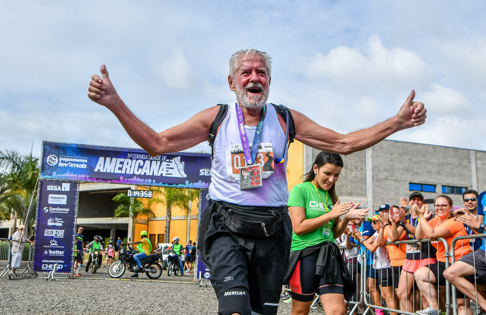
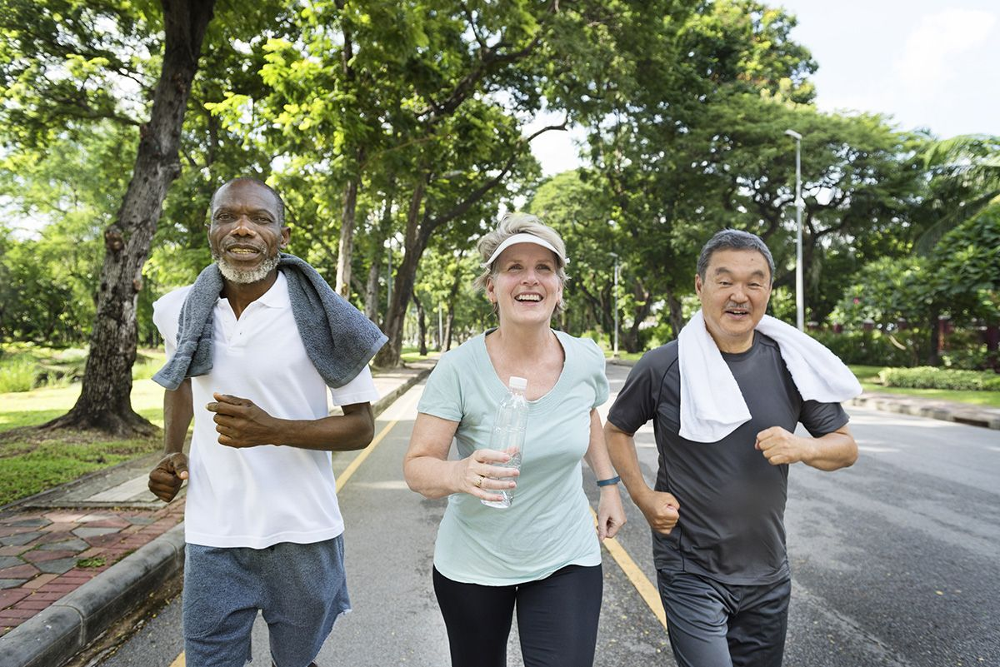

A busca pela longevidade na corrida transcende a simples prática esportiva, transformando-se em uma jornada de saúde e bem-estar que atravessa gerações. À medida que os corredores exploram seus limites físicos e mentais, cultivam hábitos de vida saudáveis que podem estender sua vitalidade ao longo dos anos. A corrida não apenas fortalece os músculos e melhora a resistência cardiovascular, mas também promove a disciplina, a resiliência e a conexão com a comunidade. Essa prática regular não só pode adicionar anos à vida, mas também vitalidade aos anos, permitindo que os corredores continuem a explorar os horizontes da sua existência com vigor e entusiasmo.
 À medida que os corredores envelhecem, é fundamental implementar rotinas de aquecimento específicas para promover a flexibilidade, prevenir lesões e melhorar o desempenho. Além dos típicos alongamentos dinâmicos e cardiovasculares, aqueles com mais de 60 anos podem se beneficiar de exercícios adicionais que visam áreas específicas do corpo e ajudam a compensar os efeitos do envelhecimento. Incluir exercícios de mobilidade articular, como rotações de tornozelos, quadris e ombros, pode aumentar a amplitude de movimento e reduzir o risco de lesões musculoesqueléticas. Também é benéfico integrar exercícios de fortalecimento para áreas-chave, como os músculos do core e os estabilizadores dos quadris, para melhorar a estabilidade durante a corrida e prevenir quedas. Além disso, praticar exercícios de equilíbrio, como ficar em pé em uma perna só ou realizar agachamentos unilaterais, pode ajudar a manter a coordenação e a estabilidade, fatores essenciais para corredores de idade mais avançada. Incorporar esses aquecimentos específicos pode ajudar os corredores mais velhos a aproveitar ao máximo suas corridas, promovendo a saúde e o bem-estar ao longo do tempo.
Antes de iniciar ou intensificar um programa de corrida, é recomendável consultar um médico para garantir que sua saúde geral e cardiovascular esteja adequada para a atividade física.
Aquecimento e alongamento: Realizar um aquecimento adequado antes de cada corrida, incluindo atividades dinâmicas e alongamentos, pode ajudar a preparar os músculos e articulações, reduzindo o risco de lesões.
Manter-se adequadamente hidratado antes, durante e após a corrida é crucial, especialmente para corredores mais velhos. Além disso, uma dieta equilibrada, rica em nutrientes essenciais, pode apoiar a saúde geral e a recuperação após o exercício.
Use protetor solar e roupas apropriadas para proteger a pele dos danos causados pelo sol durante a corrida ao ar livre.
Utilizar calçados apropriados para corrida, que ofereçam suporte e amortecimento adequados, é fundamental para prevenir lesões nos pés e nas articulações. Além disso, usar roupas confortáveis e respiráveis pode ajudar a regular a temperatura corporal durante a corrida.